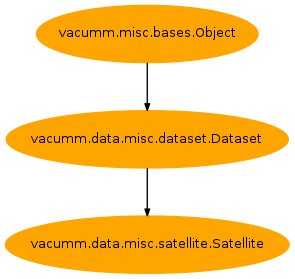

2.7.2.5.2. Content¶
| Inheritance diagram: | |
|---|---|

Provide generic satellite data reader
-
class
Satellite(dataset=None, time=None, lon=None, lat=None, level=None, ncobj_specs=None, nopat=False, patfreq=None, patfmtfunc=None, sort=True, check=True, **kwargs)[source]¶ Bases:
vacumm.data.misc.dataset.DatasetTodo
Remove this generic satellite class as it already exists in vacumm.data.satellite
-
critical= <bound class method Satellite.wrapper>¶
-
debug= <bound class method Satellite.wrapper>¶
-
error= <bound class method Satellite.wrapper>¶
-
exception= <bound class method Satellite.wrapper>¶
-
get_loglevel= <bound class method Satellite.wrapper>¶
-
info= <bound class method Satellite.wrapper>¶
-
is_debug= <bound class method Satellite.wrapper>¶
-
is_verbose= <bound class method Satellite.wrapper>¶
-
notice= <bound class method Satellite.wrapper>¶
-
notset= <bound class method Satellite.wrapper>¶
-
set_loglevel= <bound class method Satellite.wrapper>¶
-
verbose= <bound class method Satellite.wrapper>¶
-
warning= <bound class method Satellite.wrapper>¶
-